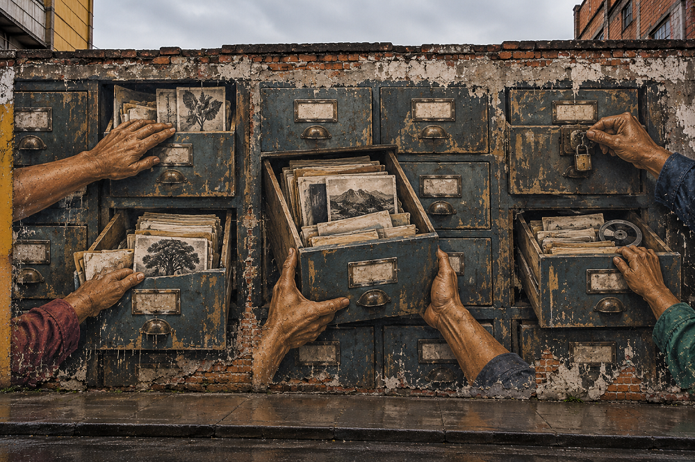

Home > Blog The Log of a Librarian > Community-Centered Librarianship With a Decolonial Turn (14)
Community-Centered Librarianship With a Decolonial Turn (14)
Community Librarianship and Indigenous Knowledge Systems
Authority, Memory, and the Limits of Preservation
This post is part of a series that reclaims community-centered librarianship from its institutional distortions, returning it to its roots in struggle, mutual aid, and collective survival. It treats libraries not as neutral services but as contested infrastructures shaped by power, resistance, and memory, and explores librarianship as solidarity work grounded in real communities, real conflicts, and the ongoing tension between institutional control and collective autonomy. Check all the posts in this section's index.
The Question of Authority
Libraries participate in the production, organization, preservation, and circulation of knowledge. Their decisions determine which materials enter collections, how they are described and interpreted, who can access them, and under what conditions they may be reproduced or shared. Community-centered librarianship has challenged the concentration of these decisions within professional institutions, advocating forms of governance and accountability that recognize communities as producers and custodians of their own knowledge.
These arguments acquire particular complexity when applied to Indigenous knowledge systems. Indigenous peoples possess distinct histories, political institutions, epistemologies, territorial relationships, and practices governing the production and transmission of knowledge. Their authority may derive from collective rights, established responsibilities, and forms of governance that precede, and exist independently of, the libraries and archives seeking to engage with them.
This raises questions about the limits of community-centered professional frameworks, particularly when institutions attempt to document, preserve, or circulate knowledge governed through relationships and obligations that they do not fully understand or control.
Authority before participation
Community participation and Indigenous self-determination are related, but they operate through different historical and political circumstances. A community library may redistribute institutional authority through collective governance, participatory decision-making, or community mandates. Indigenous peoples, however, may possess their own institutions, legal orders, and procedures governing knowledge, cultural expressions, and relationships with territory. Their authority cannot be reduced to the degree of participation offered by an external institution.
Article 31 of the United Nations Declaration on the Rights of Indigenous Peoples recognizes their rights to maintain, control, protect, and develop cultural heritage, traditional knowledge, and traditional cultural expressions. Although the implementation of these rights varies considerably among jurisdictions, the declaration establishes an important principle: Indigenous peoples are rights holders whose authority cannot be understood simply through the language of institutional inclusion.
This distinction requires attention to particular contexts. Indigenous peoples do not constitute a homogeneous cultural or political category. Their histories, forms of governance, epistemologies, and documentary practices differ, as do the relationships between collective authority and individual responsibilities. Knowledge may be transmitted through particular people, families, institutions, or relationships, and possession of knowledge does not necessarily imply unrestricted authority to disclose it.
Nor should collective authority be understood as a mechanism that automatically eliminates disagreement. Different generations, knowledge holders, political authorities, and community organizations may hold competing positions regarding documentation, access, or cultural transmission. Recognizing Indigenous self-determination requires taking those arrangements and disagreements seriously, rather than assuming that consultation with a representative will settle every question.
As Linda Tuhiwai Smith argues in Decolonizing Methodologies (1999), research involving Indigenous peoples must be understood in relation to the histories of colonial power through which knowledge has been collected, interpreted, and appropriated. For libraries and archives, this raises questions that cannot be answered through consultation alone: who defines the purpose of documentation, who establishes its conditions, and who retains authority over its subsequent use?
The responsibilities and limits of preservation
Preservation occupies a privileged position in librarianship. The survival of documents, recordings, languages, and cultural expressions is generally considered a professional achievement, particularly where historical violence, displacement, and institutional neglect have threatened their continuity. Indigenous peoples themselves have developed extensive preservation initiatives, often combining established practices of transmission with contemporary documentary technologies.
Yet preservation can transform the relationships through which knowledge acquires meaning.
An oral account recorded and deposited in an archive may become accessible outside the circumstances governing its transmission. Information associated with particular places, practices, or responsibilities may circulate independently of those relationships. Digitization can multiply these transformations, allowing materials to travel across institutional, linguistic, and political boundaries under conditions that their original custodians could not necessarily anticipate.
Territorial relationships introduce additional considerations. Knowledge concerning particular landscapes, species, resources, or practices may depend on relationships maintained through residence, movement, observation, work, and intergenerational experience. Documenting such knowledge can support continuity, research, and cultural transmission, but the resulting record cannot necessarily sustain the conditions through which that knowledge is produced and renewed. An archive may preserve descriptions of practices whose continuation also depends on access to land, ecological relationships, and the exercise of collective rights.
Kimberly Christen's article Does Information Really Want to Be Free? (2012) challenges the assumption that unrestricted circulation represents a universally appropriate objective. Her analysis demonstrates how dominant ideas about information freedom can conflict with the conditions governing particular Indigenous knowledge systems.
The implications extend beyond access restrictions. Consent to documentation does not automatically settle questions of ownership, interpretation, reproduction, or future use. Nor can an institution assume that a single authorization resolves disagreements among knowledge holders, generations, or different authorities. Such tensions may remain unsettled, and their resolution cannot always be delegated to professional procedures.
Moreover, preservation generates continuing responsibilities. Collections outlive individual agreements, staff members, technological systems, and political circumstances. Materials initially deposited under restricted conditions may later be digitized, transferred, incorporated into databases, or made available through institutional partnerships. Decisions taken in one historical moment can produce consequences for people who never participated in them.
These circumstances require mechanisms for reviewing permissions, correcting descriptions, reconsidering access, and responding to requests for restriction or return. They also require institutions to acknowledge the limits of their ability to control materials once reproduced or distributed. Legal ownership, physical custody, technical access, and legitimate cultural authority may rest with different actors, creating obligations that cannot always be reconciled through a standard archival agreement.
Preservation therefore requires attention to the legitimacy of the activity itself. A library may possess the technical capacity to record a practice, preserve a testimony, or digitize a collection without possessing sufficient authority to determine how that knowledge should be handled.
Indigenous knowledge infrastructures
These questions are already being addressed through initiatives developed by Indigenous peoples and their collaborators.
The Mukurtu Wumpurrarni-kari Archive, developed through collaboration with Warumungu people in Australia, provides an instructive example. Its development responded to the need to manage cultural materials according to community-defined protocols, including differentiated permissions governing access and circulation. Those requirements informed the design of digital infrastructure rather than being treated as exceptions to an otherwise unrestricted repository.
The Protocols for Native American Archival Materials, developed in 2006 and endorsed by the Society of American Archivists in 2018, similarly challenge conventional assumptions about institutional custody, professional authority, and the treatment of culturally sensitive records. The prolonged debate preceding their endorsement illustrates how difficult it can be for established institutions to reconsider principles they have historically regarded as foundational.
Such initiatives demonstrate that documentary infrastructures can accommodate different relationships between knowledge, authority, and access. They also reveal the importance of recognizing Indigenous peoples as active developers of archival practices, technologies, and institutional arrangements, rather than treating them primarily as communities requiring professional assistance.
No single model can resolve the diversity of situations involved. Different Indigenous peoples pursue different approaches to preservation, public access, cultural transmission, and institutional cooperation. Libraries, meanwhile, operate within legal obligations, resource limitations, and responsibilities toward multiple people whose interests may conflict. Recognition of Indigenous authority does not eliminate these constraints, although it changes how institutions must understand and negotiate them.
The challenge is to develop practices that respect forms of knowledge governance that libraries neither created nor necessarily control, while remaining accountable for the consequences of their own actions.
Beyond the documentary institution
The relationship between Indigenous knowledge systems and documentary institutions opens a field of questions that extends well beyond librarianship.
Understanding how knowledge is maintained and transformed requires examining the intellectual traditions, political institutions, languages, territories, and practices through which particular Indigenous peoples organize their relationships with the world. It also requires investigating the effects of colonial intervention, the historical displacement of documentary materials, and the contemporary struggles surrounding cultural rights, representation, and control.
Libraries and archives can contribute resources, technical expertise, institutional continuity, and opportunities for collaboration. Their contribution, however, must be understood within a much broader landscape of knowledge production and transmission.
The central challenge is to recognize the diversity of Indigenous approaches to memory, knowledge, and preservation, and to understand how their authority, responsibilities, and practices operate on their own terms.